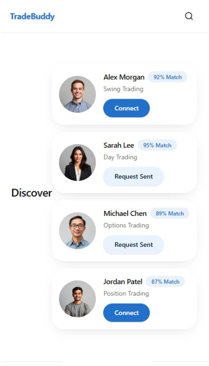

Create your trading profile
Tell TradeBuddy how you trade—your markets, trading style, timeframes, and overall approach.
Trading can be lonely. TradeBuddy helps you discover traders who share your markets, trading style, timeframe, and approach—so you can learn together, stay accountable, and build a trusted trading network.
India-first launch. Global access planned.

Many traders join courses, communities, and social media searching for answers—but still feel alone because everyone trades differently.
TradeBuddy helps traders connect with people who genuinely trade like they do, so they can exchange ideas, ask questions, stay accountable, and grow together.
Better trading comes from trusted connections, shared experience, and collective knowledge.
Tell TradeBuddy how you trade—your markets, trading style, timeframes, and overall approach.
See traders whose preferences align with yours, along with a simple compatibility indicator.
Message privately, share charts, ask questions, and stay accountable together.
TradeBuddy gives members straightforward tools to communicate privately, report content, permanently disconnect from another trader, and delete their account.
No. TradeBuddy is a social networking platform that helps traders discover compatible trading partners, connect, message, share chart images, and build trusted trading relationships. TradeBuddy does not provide brokerage services, investment advice, trading signals, copy trading, or financial recommendations.
TradeBuddy uses the profile information and trading preferences you choose to provide to recommend potentially relevant traders. Recommendations do not guarantee compatibility or results.
TradeBuddy offers a free membership. Premium features may be introduced in future updates.
Yes. You can permanently delete your account from Settings or use the public account-deletion page if you cannot access the app.
Questions, feedback, or trouble with your account? We are here to help.
Typical response time: 1–2 business days.